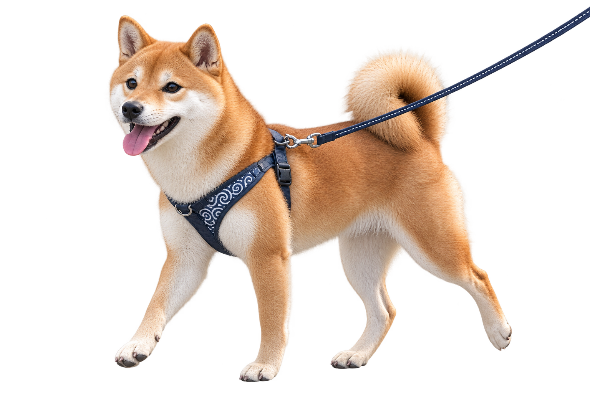
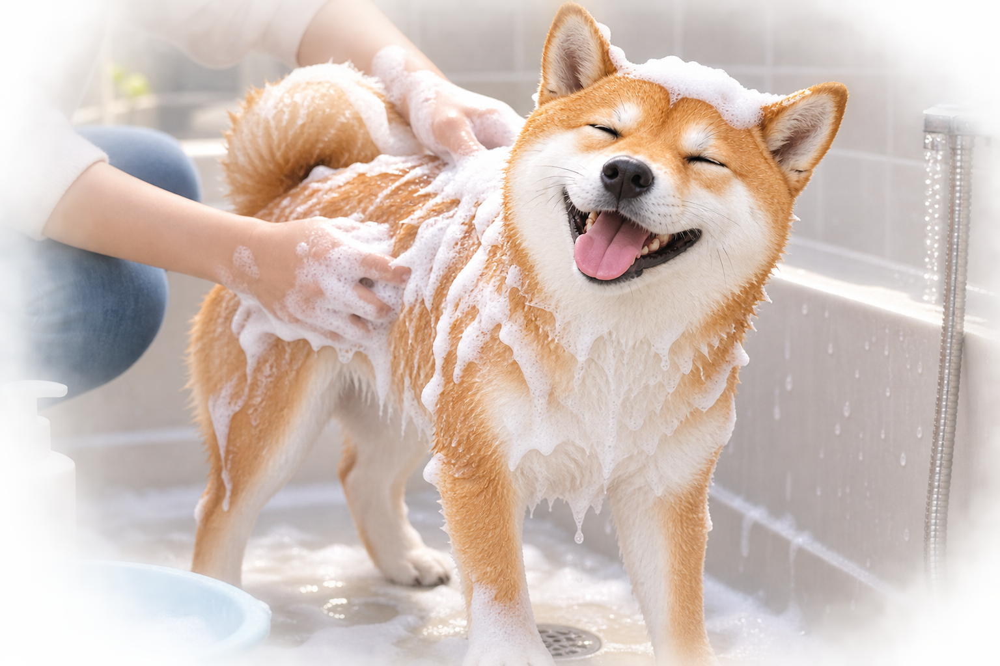

犬を飼うといえば「お散歩」が印象強い人が多いと思います。大変そうに見えますが、実際慣れてしまうとお散歩にさえ行けば犬は落ち着くので逆に人の方がお散歩に前のめりになる事が多いと思います（笑）。
1日30分を２回歩けば十分
実際お散歩は犬がへばらない限り、何時間でも歩いた方が良いのですが時間は限られているのでめあすをいうと、一日30分以上を２回で十分です。
しかし条件はあります。
見ているだけで面白可愛い柴犬ですが、いざ飼うとなると色々な疑問も出てきますよね。
柴犬を迎えるにあたって気を付けるべき点はどこなのでしょうか？
知っておいた方が良いであろう知識を盛り込んでお届けします！

犬を飼うといえば「お散歩」が印象強い人が多いと思います。大変そうに見えますが、実際慣れてしまうとお散歩にさえ行けば犬は落ち着くので逆に人の方がお散歩に前のめりになる事が多いと思います（笑）。
実際お散歩は犬がへばらない限り、何時間でも歩いた方が良いのですが時間は限られているのでめあすをいうと、一日30分以上を２回で十分です。
しかし条件はあります。
①
早歩き
たまにお散歩中に長い時間止まって話をしている人たちがいます。ドックランとかにいるなら良いと思いますが、お散歩は犬のトイレと歩くための行事です。思っている以上に早歩きでお散歩をすることをおすすめします。
②
他人に近づけない
知っている犬仲間にお散歩途中偶然会うときに犬同士の戯れはともかく、全く知らない人の犬と交流させようと待ち構える行為はやめましょう。
お互いどんな病気を持っているかも、状況もわからない上、メリットが何もありません。お互いの犬を守りたいなら他人との接触は控えるべきです。
毎日といって良いほどやってあげたほうがいい事がブラッシングです。ブラッシングを数日開けただけでも部屋の中は毛っぽくなり、犬自身も痒そうにします。特に換毛期、季節の変わり目がひどくてもう１匹作れるような毛の量が抜けます。
おすすめはお散歩が終わって、足を拭くタイミングでついでにブラッシングする事です。一日５分もブラッシングすれば十分な量抜け、お散歩でついた虫も取れるためです。

シャンプーは大体一ヶ月〜二ヶ月に一回のペースでしてあげましょう。家でシャンプーしてあげるでも十分ですが、四ヶ月に１回はシャンプー屋さんに出してあげることをおすすめします。
なぜなら、肛門腺絞り、爪切り、お尻と肉球の間の毛を整えてあげるためです。この３つは自分でやるには少し難易度がく、中々自分では出来ません。出来そうなら、シャンプー屋さんに出さなくてもどちらでも良いと思います。